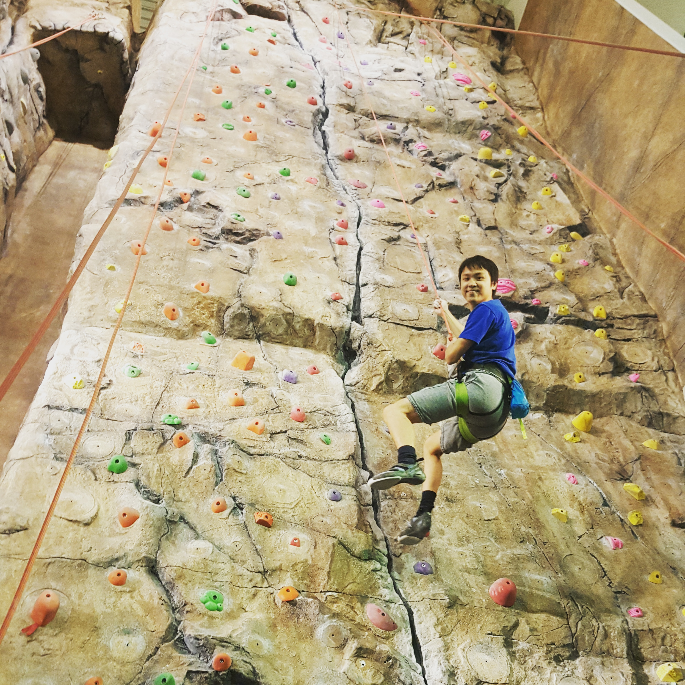
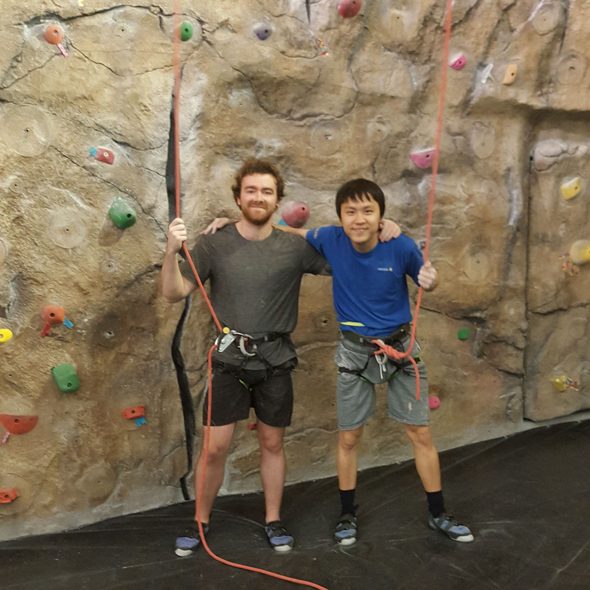

Wall Climbing
I enjoy rock climbing because it challenges my determination and self-belief. It is an activity that greatly promotes my wellness and builds up my energy level, which can motivate me to continue my work the following days. When I was studying at the U of S for my M.Sc. degree, I was fortunate to have friends with a similar interest who normally join me for weekly wall climbing at the fitness centre. Doing wall climbing with a team mate is also a sports activity based on trust. It strengthens friendship and reaffirms my belief about the idea that sports create platforms that integrate people regardless of their ethnicities.

